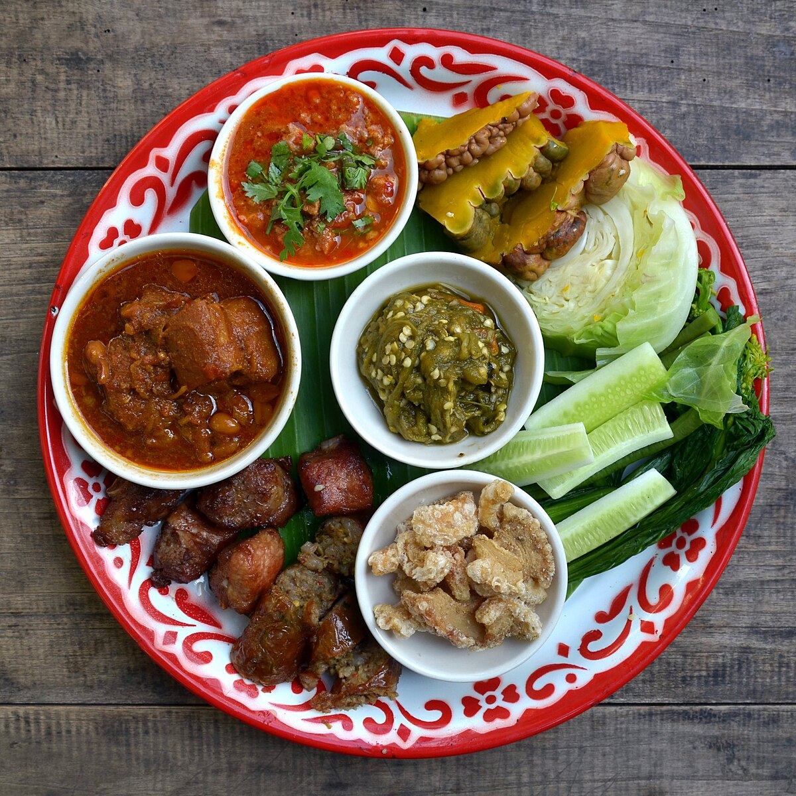
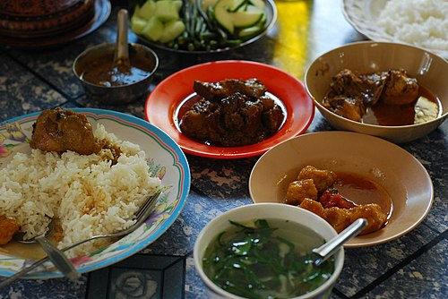
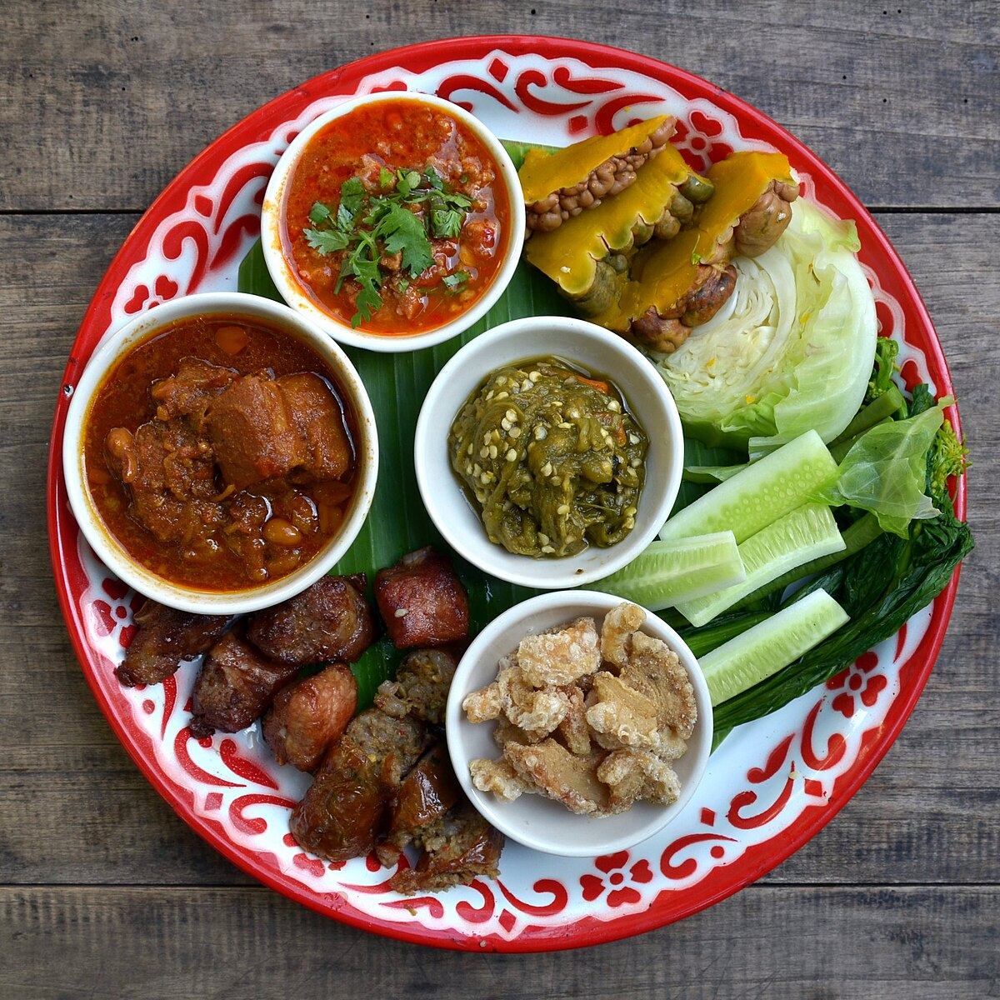
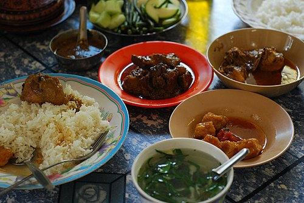

Welcome to the Golden Land: Introduction to Myanmar
Myanmar, often referred to as the "Golden Land" for its thousands of glittering pagodas, is a nation of breathtaking beauty and deep spiritual heritage. Nestled in Southeast Asia between India, China, and Thailand, it remains one of the region’s most authentic and untouched destinations. From the snow-capped peaks of the Himalayas in the north to the pristine beaches of the Andaman Sea in the south, Myanmar is a country of diverse landscapes. However, its true heart lies in its people—warm, resilient, and deeply hospitable—comprising over 135 distinct ethnic groups that weave a complex and colorful cultural tapestry.
Culture & Traditions
Myanmar’s culture is a vibrant tapestry woven from deep Buddhist devotion and ancient customs. Daily life centers around the glittering pagodas where locals make merit, while festivals like Thingyan (the Water Festival) bring the country to life with joyous celebration. Traditional dress remains a staple, with both men and women wearing the elegant longyi and applying natural thanaka paste for beauty and sun protection. Above all, it is a land of gentleness and respect, where a warm smile is the standard greeting and reverence for elders guides daily interaction.
A Taste of Burma: The Cuisine
Burmese food is a hidden gem of Southeast Asian cuisine—a savory fusion of Thai spice, Indian richness, and Chinese technique, yet distinctively unique. It relies heavily on sour, salty, and spicy flavors.
Dinner Etiquette
A traditional Burmese meal is a communal affair. All dishes—curries, soups, salads, and vegetables—are served simultaneously in the center of the table.
- Rice is the canvas: Everything is eaten with steamed white rice.
- Hands on: Traditionally, food is eaten with the fingers of the right hand, allowing the diner to mix the curry and rice to the perfect texture.
- Soup to cleanse: A light, tart broth is almost always served on the side to sip between bites, cleansing the palate of the rich curry oils.
Common ingredients include garlic, onion, turmeric, fish sauce, dried shrimp, and fresh herbs. You will find noodle soups, salads, curries, side dishes, and desserts.
 


